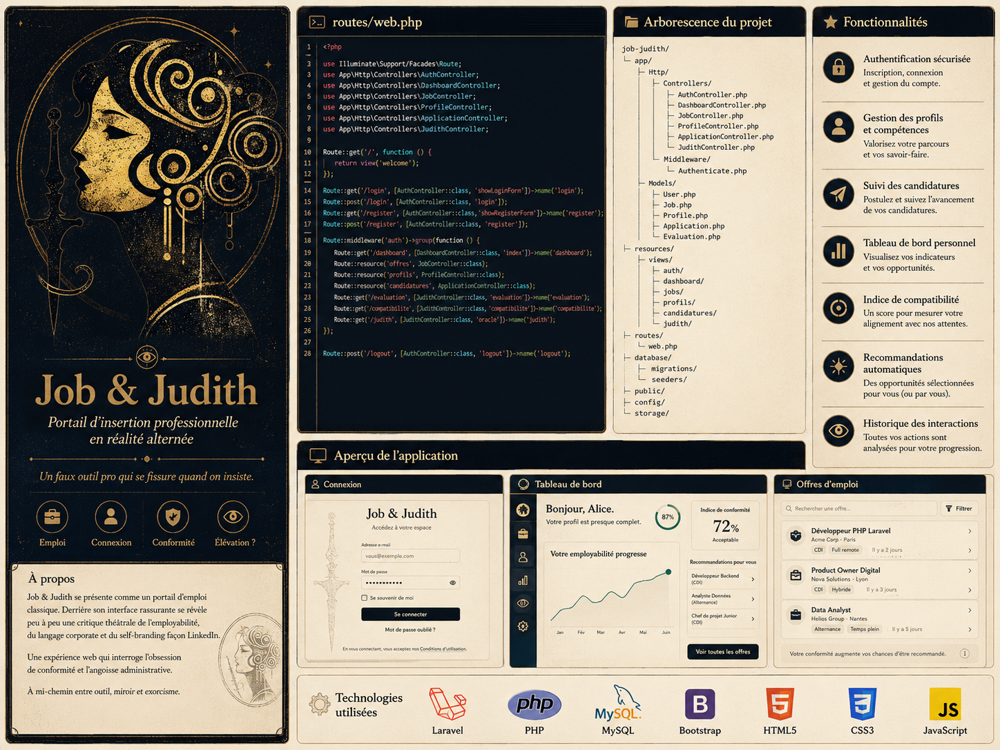

Job & Judith : insertion professionnelle en réalité alternée
Job & Judith se présente comme un portail d’insertion professionnelle classique. L’utilisateur y crée un profil, consulte des offres, renseigne ses compétences et simule des candidatures. Mais l’interface révèle progressivement une seconde nature...
- PHP
- Laravel
- HTML5
- CSS3